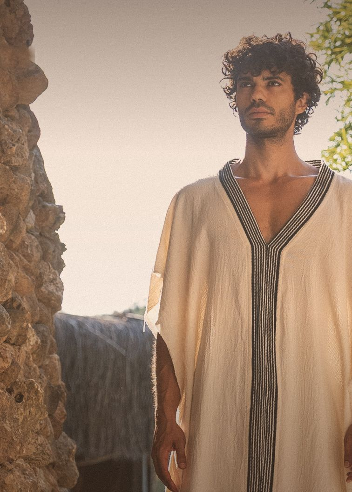

AtölyeWorkshop
Gün boyunca birkaç dizilim açarız; aralarda paylaşım ve sessizlik için zaman ayırırız.Over the day we open several constellations, with time for sharing and silence in between.
Aile Dizilimi · İstanbul ve inzivalarFamily Constellations · Istanbul & retreats
Taşıdıklarımızın bir kısmı bizden önce başladı. Kuşaklar boyunca aktarılana, söylenemeyene, yarım kalan vedalara birlikte ve şefkatle bakarız.Some of what we carry began before us. Together, and with compassion, we look at what was passed down through generations, what could not be said and the farewells left unfinished.

NedirWhat it is
Hepimiz bir aile sisteminin içine doğarız. Annemizden, babamızdan ve onlardan öncekilerden sevgiyle birlikte korkuları, susulanları ve yarım kalanları da alırız. Bizden öncekiler de bizim gibi taşımış ve aktarmıştır.
We are all born into a family system. From our mother, our father and those before them we receive love, and with it fears, silences and what was left unfinished. Those before us carried and passed things on, just as we do.
Aile dizilimi, bu aktarılana bir grup içinde, temsilcilerle bakılan bir çalışmadır. Temsilciler alana yerleşir ve çoğu zaman kimi temsil ettiklerini bilmeden o kişinin hislerine girer. Böylece ailenin içindeki yerler, bağlar ve görünmeyenler görünür hâle gelir.
Family constellations is a way of looking at what was passed on, in a group and with representatives. They take their places in the field and, often without knowing whom they stand for, step into that person's feelings. The places, bonds and unseen parts of the family become visible.
Ne içinWhat for
Kimler içinWho it is for
Ailesiyle ilişkisine bakmak isteyen, hayatında tekrar eden bir döngü fark eden, bir kaybı ya da ayrılığı taşıyan herkes için.
For anyone who wants to look at their relationship with their family, who notices a recurring cycle in their life, or who carries a loss or a separation.
Kendi dizilimini açmadan temsilci olarak katılmak da mümkün. Başkası için alanda durmak da insanın kendi hikâyesine dokunur.
You can also take part as a representative without opening your own constellation. Standing in for someone else also touches one's own story.
Bir dizilimA constellation
BuluşmalarGatherings
Gün boyunca birkaç dizilim açarız; aralarda paylaşım ve sessizlik için zaman ayırırız.Over the day we open several constellations, with time for sharing and silence in between.
Köklere dönük programlarda dizilim, ritüel ve sessizlik bir arada.In programmes turned towards our roots, constellations, ritual and silence come together.
KolaylaştırıcıFacilitator
Baran aile dizilimini uzun yıllar asistanlık yaparak öğrendi ve sertifika eğitimini tamamladı. İstanbul'da atölyeler ve inzivalarda dizilim alanları açıyor.
Baran learned family constellations through many years of assisting and completed his certification training. He opens constellation fields in workshops in Istanbul and at retreats.
Alanı sakin ve yavaş tutar; az konuşur, çok izler. Gördüğünü söyler ve sorar.
He holds the field calmly and slowly; he speaks little and watches closely. He names what he sees and asks.
Diğer çalışmalarOther work
Kanun, makam müziği ve elektronik prodüksiyon. Konser, festival ve seremoni setleri.Qanun, makam music and electronic production. Concert, festival and ceremony sets.
Sayfaya git →Visit page →Grup ve özel dersler, hareket çalışmaları. Ders sonunda kanunla dinlenme.Group and private classes and movement work, closing with a rest to qanun.
Sayfaya git →Visit page →Uzanarak dinlenen canlı bir ses deneyimi: kanun, gong ve kâseler.A live sound experience you receive lying down: qanun, gong and bowls.
Sayfaya git →Visit page →Sıcak suda, desteklenerek yapılan birebir bir çalışma.A one-to-one session in warm water, held and supported.
Sayfaya git →Visit page →İletişimContact
Konser, ders, atölye, inziva ve seremoni davetleri için yaz. Türkçe ve İngilizce.For concerts, classes, workshops, retreats and ceremonies. Turkish and English.
baran.eskili@gmail.com